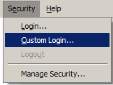
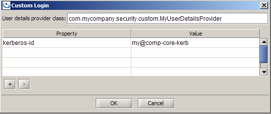

Section Summary: Customize the security based on your application requirements
Introduction
This section introduces the architecture and customizable API that can be leveraged to implement your own security requirements, or integrate with already existing standards (i.e. Spring Security).
Before you start, consider the extensions of our default file-based implementation which allow you to replace the encoding and to reference a security file on an HTTP server.
This section assumes that you are familiar with the configuration concepts presented in Security Configurations and Default File-Based Security Implementation.
Customizable interfaces
There are two main interfaces from which customization begins. Usually you would need to implement both as they are the protocol for establishing authentication. The SecurityManager is the main interface which includes an authentication manager running at the server-side (GSM, GSC, Space).
The UserDetails interface provides core security credentials (username and password) for authentication. Custom security implementations may require different credentials to complete an authentication. The UserDetails are the authentication details passed to the SecurityManager upon the call to authenticate.
An optional interface is the DirectoryManager which is used to access users and roles stored in some external directory - specifically used for tooling. In our default implementation, it is possible to manage the users and roles stored in a local file using the UI.
Packaging and Classpath
Your custom implementation class jars should be located under the lib/optional/security directory.
This directory acts as a common directory for all services using the same custom security.
<GigaSpaces root>/lib/optional/security/my-custom-security.jar
Processing units may share a custom security implementation that may differ from that of the GSM and GSCs. In this case, the custom security jar can be placed under pu-common.
<GigaSpaces root>/lib/optional/pu-common/my-pu-custom-security.jar
If each processing unit has its own custom security implementation, the custom security jar can be part of the processing unit distribution.
<GigaSpaces root>/deploy/hello-processor/lib/my-processor-custom-security.jar
| The custom security jar should only contain the relevant security classes |
Custom SecurityManager
The SecurityManager Interface has the following methods:
public interface SecurityManager { void init(Properties properties) throws SecurityException; Authentication authenticate(UserDetails userDetails) throws AuthenticationException; DirectoryManager createDirectoryManager(UserDetails userDetails) throws AuthenticationException, AccessDeniedException; void close(); }
The SecurityManager can be configured (via init method) by custom properties supplied as part of the security properties file.
Configuration
The property key com.gs.security.security-manager.class defines the SecurityManager class to instantiate. This property key is located either in the security.properties file, component xxx-security.properties file, or as part of the pu.properties (see Security Configurations).
com.gs.security.security-manager.class = eg.security.MyCustomSecurity eg.security.my-property-key = my-property-value
Custom SecurityManager Implementation Example:
package eg.security; import... public class MyCustomSecurity implements SecurityManager { public void init(Properties properties) throws SecurityException { System.out.println("\n *** MyCustomSecurity initialized \n"); } public void close() { } public Authentication authenticate(UserDetails userDetails) throws AuthenticationException { if (!userDetails instanceof MyUserDetails) { throw new AuthenticationException("Unsupported credentials"); } MyUserDetails customUserDetails = (MyUserDetails)userDetails; String kerberosId = customUserDetails.getKerberosId(); //authenticate using kerberosId //if not authenticated, throw AuthenticationException ... //Extract privileges and populate a new UserDetails instance //usually these will be taken from some repository //-- //for this example - we give them full grid privileges and full space privileges once authenticated MyUserDetails populatedUserDetails = new MyUserDetails(kerberosId); populatedUserDetails.setAuthorities(new Authority[] { new GridAuthority(GridPrivilege.MANAGE_GRID), new GridAuthority(GridPrivilege.MANAGE_PU), new GridAuthority(GridPrivilege.PROVISION_PU), new SpaceAuthority(SpacePrivilege.WRITE), new SpaceAuthority(SpacePrivilege.READ), new SpaceAuthority(SpacePrivilege.TAKE)}); Authentication a = new Authentication( populatedUserDetails ); return a; } public DirectoryManager createDirectoryManager(UserDetails userDetails) throws AuthenticationException, AccessDeniedException { throw new DirectoryAccessDeniedException("Not supported, only an example"); } }
 Note that in the example we use a custom implementation of UserDetails, instead of, the default User as the UserDetails implementation.
Note that in the example we use a custom implementation of UserDetails, instead of, the default User as the UserDetails implementation.
Custom UserDetails
The UserDetails interface provides core user information. The username and password are accessed by the default security implementation, but can otherwise be ignored.
The only requirement is for the SecurityManager.authenticate method to return an Authentication object, which is fully populated with authorities extracted from the UserDetails.
public interface com.gigaspaces.security.directory.UserDetails extends java.io.Serializable { public abstract com.gigaspaces.security.Authority[] getAuthorities(); public abstract java.lang.String getPassword(); public abstract java.lang.String getUsername(); }
Custom UserDetails Implementation Example:
public class MyUserDetails implements UserDetails { private static final long serialVersionUID = 1L; private final String kerberosId; private Authority[] authorities; public MyUserDetails(String kerberosId) { this.kerberosId = kerberosId; } public String getKerberosId() { return kerberosId; } public Authority[] getAuthorities() { return authorities; } public void setAuthorities(Authority[] authorities) { this.authorities = authorities; } public String getPassword() { return null; //none } public String getUsername() { return null; //none } }
Custom UserDetails can be provided in several ways, as follows:
Namespace
When creating an embedded secured Space:
<bean id="myUserDetails" class="eg.MyUserDetails"> <constructor-arg> <value>88f343f63c2bf646</value> </constructor-arg> </bean> <os-core:space id="space" url="/./mySpace"> <os-core:security user-details="myUserDetails" /> </os-core:space>
When looking up a secured Space:
... <os-core:space id="space" url="jini://*/*/mySpace"> <os-core:security user-details="myUserDetails" /> </os-core:space>
Plain XML
When creating an embedded secured Space:
<bean id="myUserDetails" class="eg.MyUserDetails"> <constructor-arg> <value>88f343f63c2bf646</value> </constructor-arg> </bean> <bean id="space" class="org.openspaces.core.space.UrlSpaceFactoryBean"> <property name="url"><value>"/./mySpace"</value></property> <property name="userDetails"><ref local="myUserDetails"/></property> </bean>
When looking up a secured Space:
... <bean id="space" class="org.openspaces.core.space.UrlSpaceFactoryBean"> <property name="url"><value>"jini://*/*/mySpace"</value></property> <property name="userDetails"><ref local="myUserDetails"/></property> </bean>
Code
UrlSpaceConfigurer urlSpaceConfigurer = new UrlSpaceConfigurer("/./mySpace").userDetails( new MyUserDetails("88f343f63c2bf646") ); GigaSpace gigaSpace = new GigaSpaceConfigurer(urlSpaceConfigurer).gigaSpace();
Constructing an Admin instance
Admin admin = new AdminFactory().userDetails( new MyUserDetails("88f343f63c2bf646") ).createAdmin();
Space Deployment
... admin.getGridServiceManagers().deploy(new SpaceDeployment("mySpace").userDetails( new MyUserDetails("88f343f63c2bf646") ));
Processing Unit Deployment
... admin.getGridServiceManagers().deploy(new ProcessingUnitDeployment("myPu").userDetails( new MyUserDetails("88f343f63c2bf646") ));
 At this time the UI and CLI do not provide means for instantiating your custom UserDetails.
At this time the UI and CLI do not provide means for instantiating your custom UserDetails.
Custom UserDetails login using the UI (Since 8.0.1)
The "Custom Login" option can be accessed using the drop-down menu of the "Security" menu.

The "Custom Login" dialog allows to input the class name of the UserDetailsProvider implementation and the required properties.
The implementation class can be placed in a JAR under Gigaspaces\lib\platform\ext or anywhere in the classpath of the UI.

The UserDetailsProvider interface takes a properties object and returns a UserDetails instance.
public interface UserDetailsProvider { UserDetails create( Properties properties ) throws Exception; }
An example implementation may be as follows:
public class MyUserDetailsProvider implements UserDetailsProvider { public UserDetails create( Properties properties ) throws Exception { String kerberosId = properties.getProperty("kerberos-id"); if (kerberosId == null) throw new IllegalArgumentException("Missing kerberos-id property"); return new MyUserDetails(kerberosId); } }
Setting a Custom UserDetailsProvider
It might be convenient if you only have one provider, to set it prior to launching the UI. This will automatically set it as the "user details provider class".
gs-ui(.sh/.bat) -user-details-provider com.mycompany.security.custom.MyUserDetailsProvider
Custom UserDetails login using the CLI (Since 8.0.1)
For a full list of command usage, please refer to: Command Line Interface (CLI) Security
Interactive
Run the gs script and use the command line arguments -user-details-provider and -user-details-properties with the user credentials.
gs(.sh/bat) -user-details-provider com.mycompany.security.custom.MyUserDetailsProvider -user-details-properties prop1=value1;prop2=value2
or, run the gs script, and then use the login command
gs(.sh/bat) gs> login -user-details-provider com.mycompany.security.custom.MyUserDetailsProvider -user-details-properties prop1=value1;prop2=value2 gs> ...
Non-Interactive
Run the gs script, and prefix any command with the command line arguments -user-details-provider and -user-details-properties.
gs(.sh/.bat) -user-details-provider com.mycompany.security.custom.MyUserDetailsProvider -user-details-properties prop1=value1;prop2=value2 [command]
The authentication process
The authentication process of a principal is done at the server side. The SecurityManager#authenticate method is responsible for authenticating the UserDetails supplied as part of the authentication request.
Authentication authenticate(UserDetails userDetails) throws AuthenticationException;
The UserDetails are encrypted at the proxy and decrypted at the server. This encryption is internal to GigaSpaces. This should not be confused with the encryption used by your custom implementation to encrypt the user details/password. For example, our default file-based security implementation hashes the user password, and encrypts the file contents.
The Authentication Object
The Authentication object returned by the authenticate method receives a UserDetails from which it extracts the authorities. After confirming the authenticity, the implementation must populate the UserDetails with the authorities extracted from some storage. The Authority can be constructed using an AuthorityFactory if it has been kept in its String representation.
Populating with authorities
The authorities returned are a flat representation of all the authorities this user has been granted. This means that if the user has been granted a role then the flat representation would be all the authorities this role represents.
 You may find it convenient using our constructs. GigaSpaces security represents roles as an Authority. The RoleAuthority is a place holder for the role name. When populating a UserDetails a PopulatedRoleAuthority can be used to store the role-name and all the authorities it represents.
You may find it convenient using our constructs. GigaSpaces security represents roles as an Authority. The RoleAuthority is a place holder for the role name. When populating a UserDetails a PopulatedRoleAuthority can be used to store the role-name and all the authorities it represents.
You can implement roles as you wish. As long as the authorities returned by UserDetails#getAuthorities() are a flat representation of all the authorities granted to this user.
User/Role management
The DirectoryManager interface provides an API for managing users and roles. Implementing this interface is optional - and is usually the case if you have an external tool that manages it for you.
From the DirectoryManager you can gain a UserManager interface and a RoleManager interface. Use the UserManager interface to create, delete, update UserDetails and the RoleManager interface to create, delete, update RoleDetails. This is just a logical separation - in reality you can choose how you want your users to be stored, and how you structure the one-to-many role to user relationship.
GigaSpaces security is not aware of the directory at all. As long as the authentication process manages to access the user storage, authenticate the user and return all its authorities.
Example usage of the DirectoryManager API
 Securing the HelloWorld example
Securing the HelloWorld example
In the Hello World example, we presented a way to declare the users using the UI. It can also be done using the DirectoryManager API.
Using the API we would like to declare the following:
The "helloProcessor" user will be granted Take access for HelloObject and Write access for ProcessedHelloObject.
The "helloFeeder" user will be granted Write access for HelloObject and Read access for ProcessedHelloObject.
The GigaSpaces User is the default implementation of UserDetails. It accepts an array or a sequence of Authority-ies (varargs). Here we added the ClassFilter to restrict access to this specific class.
Properties securityProperties = new Properties(); SecurityManager securityManager = SecurityFactory.createSecurityManager(securityProperties); DirectoryManager directoryManager = securityManager.createDirectoryManager(new User("admin", "admin")); UserManager userManager = directoryManager.getUserManager(); userManager.createUser(new User("helloProcessor", "helloWorld", new SpaceAuthority(SpacePrivilege.TAKE, new ClassFilter("org.openspaces.example.helloworld.common.HelloObject")), new SpaceAuthority(SpacePrivilege.WRITE, new ClassFilter("org.openspaces.example.helloworld.common.HelloObject")) )); userManager.createUser(new User("helloFeeder", "feedTheWorld", new SpaceAuthority(SpacePrivilege.WRITE, new ClassFilter("org.openspaces.example.helloworld.common.HelloObject")), new SpaceAuthority(SpacePrivilege.READ, new ClassFilter("org.openspaces.example.helloworld.common.HelloObject")) )); directoryManager.close(); securityManager.close();